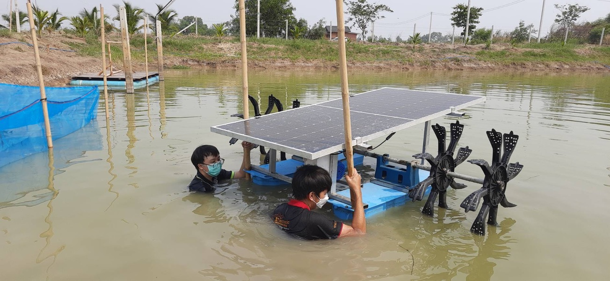
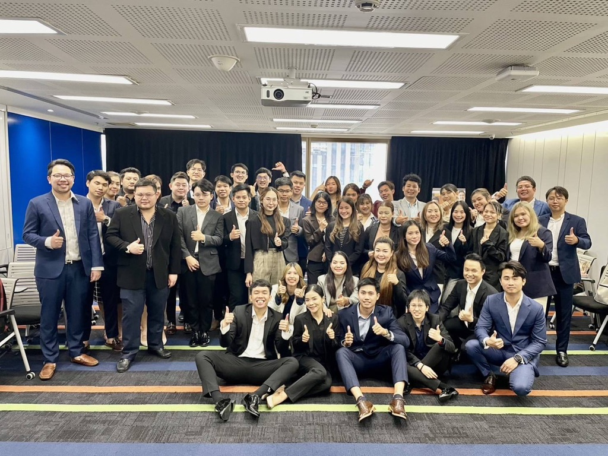

Experience in Marketing & Business Analysis.ประสบการณ์ในสายงาน มาร์เก็ตติ้ง และการวิเคราะห์ข้อมูล
Hello, I'm Thanatorn. I blend financial logic, data analysis, and operational hands-on experience to turn complex business challenges into smooth, actionable workflows.สวัสดีครับ ผมธนธรณ์ ลอจิกทางการเงิน การวิเคราะห์ข้อมูล และประสบการณ์ทำงานหน้างานจริง มาผสมผสานกันเพื่อเปลี่ยนปัญหาที่ซับซ้อน ให้กลายเป็นระบบการทำงานที่ราบรื่นและวัดผลได้
Bachelor's Degree in Business Financeปริญญาตรี บริหารแขนงการเงิน (Finance)
Solid foundation in financial analysis, corporate finance, and quantitative data evaluation.รากฐานความรู้ด้านการวิเคราะห์ตัวเลขและการเงินองค์กร ซึ่งเป็นแกนหลักในกระบวนการคิดเชิงตรรกะสำหรับการทำงาน
📜
IC License Level P1 (2023)ใบอนุญาตผู้แนะนำการลงทุน IC Level P1 (2023)
Certified by SEC Thailand. Equipped with deep knowledge of financial instruments, complex regulatory compliance, and ethical client advisory standards.ได้รับการรับรองจาก ก.ล.ต. มีความเข้าใจลึกซึ้งเกี่ยวกับตราสารทางการเงิน กฎระเบียบข้อบังคับที่ซับซ้อน (Compliance) และจรรยาบรรณในการให้คำปรึกษาเมื่อปี 2023
Achievementตัวอย่างผลงาน
Due to the company's confidentiality policy, the file available for download is a sample version.เนื่องด้วยการรักษาความลับของบริษัทที่เคยทำงานไฟล์ที่ท่านดาวน์โหลดได้จึงเป็นไฟล์ตัวอย่าง และไฟล์ที่เกี่ยวข้องกับตัวเลขโดนตรงจะไม่สามารถเปิดเผยได้หากอยากรู้ลอจิกหรืออื่นๆ เพิ่มเติมติดต่อมาสัมภาษณ์นะค้าบ
Projectโปรเจกต์
Objectiveจุดประสงค์
My Actionสิ่งที่ผมลงมือทำ
Impactผลลัพธ์
Actionดาวน์โหลด
Feasibility Study & Valuation ModelFinancial Modeling
Evaluated the investment feasibility.ประเมินความคุ้มค่าของการลงทุน (Feasibility)
Gathered requirements from stakeholders to define cost variables.
Built a financial model on Advanced Excel covering CAPEX, PnL, and Cash Flow.
Turned raw assumptions into Information that helps executives make decisions more easily., with clear figures for calculating risk.เปลี่ยนสมมติฐานทางธุรกิจให้เป็น ข้อมูลที่ช่วยให้ผู้บริหารตัดสินใจได้ง่ายขึ้น โดยมีตัวเลขที่ชัดเจนในการคำนวณความเสี่ยง
Standardized risk disclosure guidelines to comply with regulations and social media policies.วางมาตรฐานการทำงานและเปิดเผยความเสี่ยง ให้ถูกต้องตามระเบียบของกฎหมาย และแพลตฟอร์มโซเชียลมีเดีย
Conducted regulatory analysis on financial advertising.
Drafted SOP checklists for the Marketing team to review content.
Mitigated corporate legal risks and established a transparent Audit Trail.ช่วยลดความเสี่ยงทางกฎหมายให้บริษัท และสร้าง Audit Trail ที่ตรวจสอบย้อนหลังได้
Analyze historical data to forecast sales targets and drive overall marketing performance.วิเคราะห์ข้อมูลเพื่อคาดการณ์เป้ายอดขาย (Forecast) และหาแนวทางผลักดันยอดขายของทีม
Gathered historical sales and marketing data to identify trends and seasonal patterns.
Built tracking models to align the marketing team's strategy with actionable sales targets.
The team has achieved higher appointment and success rates in their campaigns.ทีมมีอัตราการนัดหมาย และอัตราประสบความสำเร็จในแคมเปญมากขึ้น
Marketing Budget OptimizationMarketing Ops
Manage and control the marketing budget to maximize ROI and operational efficiency.บริหารจัดการและควบคุมงบประมาณแคมเปญการตลาด เพื่อให้เกิดความคุ้มค่าสูงสุด (ROI)
Audited existing marketing spend across various channels to identify wastage.
Reallocated budgets dynamically towards high-performing campaigns and continuously monitored metrics.
Successfully delivered marketing campaigns with approximately 30% improved cost efficiency without compromising reach.ควบคุมงบประมาณได้ตามเป้า และสามารถเพิ่มประสิทธิภาพความคุ้มค่า (Cost Efficiency) ได้ถึง 30% โดยผลลัพธ์ยังคงเป็นไปตามเป้าหมาย
Markdown FileMy Project
This is a personal project of mine, intended to demonstrate a certain level of understanding regarding how to work alongside developers.นี่คือโปรเจ็กต์ส่วนตัวของผมที่จะแสดงถึงความเข้าใจในระดับหนิ่งกับการทำงานร่วมกับ dev.
An example of an MD file used for communication with developers; this is also a key project I am currently developing.
In addition to routine task tracking, the ability to understand timeframes and team capacity serves as another key strength in setting the direction and priorities for a project.นอกเนื่องจากการติดตามงานปกติการที่สามารถเข้าใจกรอบของระยะเวลา และความสามารถของทีมถือเป็นอีก 1 จุดแข็งในเรื่องกำหนดทิศทางความสำคัญของโปรเจ็กต์
Hands-on experiences that shaped my versatility in tech, finance, and business expansion.ประสบการณ์จริงที่หล่อหลอมความเข้าใจในสายงานเทคโนโลยี การเงิน และการขยายธุรกิจ

E-Power Services
My first step into the industrial world, managing IoT systems for Smart Farms. This gave me a solid understanding of hardware, sensor data collection, and how to pitch technical solutions to clients.ก้าวแรกในโลกอุตสาหกรรมด้วยการดูแลระบบ IoT สำหรับ Smart Farm ที่นี่สอนให้ผมเข้าใจการทำงานของระบบฮาร์ดแวร์ การเก็บข้อมูล (Data Collection) และวิธีการนำเสนอโซลูชันทางเทคนิคให้ลูกค้าเข้าใจง่าย

Allianz Ayudhya (Bluestar Program)
Dived into the financial and sales sector. I honed my skills in reading complex policies, conducting deep competitor analysis, and navigating professional social settings to build trust with clients.เข้าสู่วงการการเงินและการขาย ผมได้ฝึกทักษะการอ่านวิเคราะห์กรมธรรม์ที่ซับซ้อน การทำ Competitor Analysis เปรียบเทียบคู่แข่ง และการวางตัวในสังคมเพื่อสร้างความน่าเชื่อถือให้กับลูกค้า
Shop Plus Management
This role showed me that real growth happens when marketing, data, and operations connect. I learned to use data to drive ROI and work with tech teams to bring business ideas to life. Above all, getting hands-on with daily problem-solving taught me how to spot operational gaps and turn everyday chaos into smooth, data-driven workflows.งานนี้สอนให้ผมรู้ว่าธุรกิจจะโตได้ ต้องเชื่อมข้อมูล การตลาด และระบบหลังบ้านเข้าด้วยกัน ผมได้เรียนรู้วิธีใช้ Data มาเพิ่ม ROI และฝึกทำงานกับทีม Dev เพื่อเปลี่ยนไอเดียธุรกิจให้เป็นระบบที่ใช้งานได้จริง ที่สำคัญ การได้ลงไปคลุกคลีกับปัญหาหน้างาน สอนให้ผมมองเห็น 'จุดบอด' และรู้วิธีจัดการความวุ่นวายรายวันให้กลายเป็น Workflow ที่ไหลลื่นครับ
Are you ready for me to interview yet?พร้อมที่จะผมสัมภาษณ์ยัง?
Let's discuss how my analytical logic, financial background, and operational drive can help build exceptional workflows for your team.ติดต่อเพื่อพูดคุยว่าลอจิกการวิเคราะห์ข้อมูล ความรู้ด้านการเงิน และแพชชั่นในการทำงานของผม จะช่วยแก้ปัญหาและสร้างระบบที่ดีให้ทีมของคุณได้อย่างไร